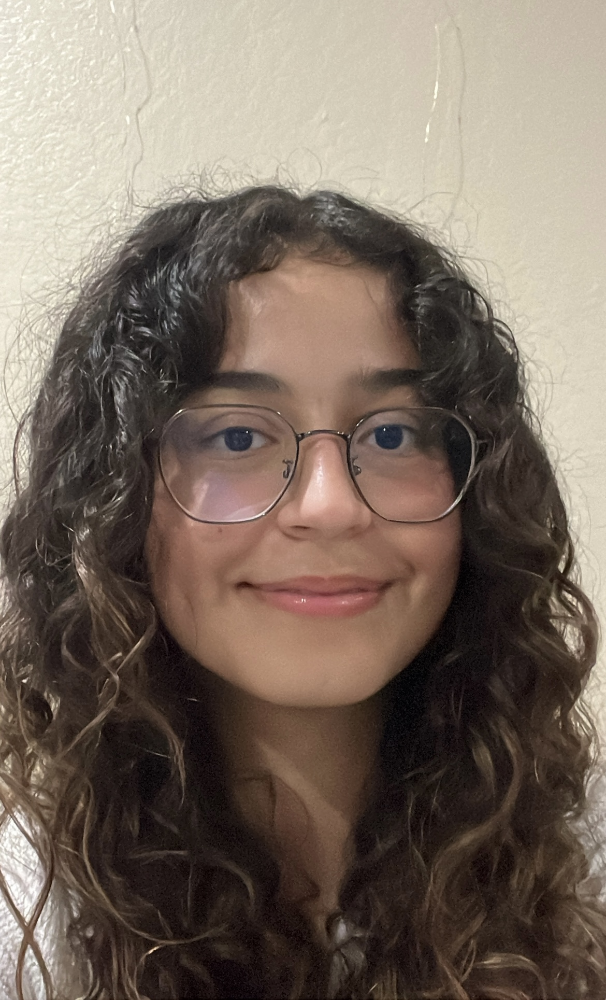

CS180 Project 0 — Becoming Friends with Your Camera
Part 1: Selfie: The Wrong Way vs. The Right Way
Close up image (not zoomed)

Step back & zoom in
Part 2: Architectural Perspective Compression
Street: stepped back & zoomed in
Street: got closer and no zoom
Part 3: The Dolly Zoom
Dolly zoom animation of my watermelon stuffed animal